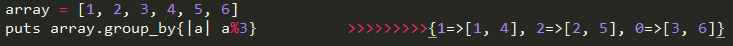
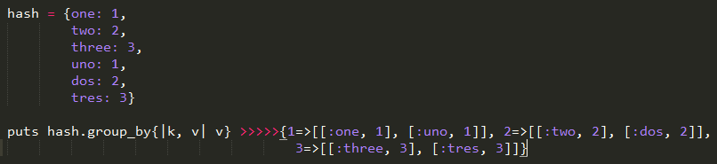
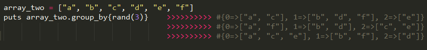

The Group_by method is an enumerable method that can be used on arrays or hashes. Group_by iterates through the array or hash and puts each element into a group based on the conditions in the block.
Array Example:

In this example we are passing each element through a modulo 3, the remainder (0, 1, 2) are our groups. Each element will be placed into one of these new groups. These groups are hashes of arrays, meaning the hash key is the 'group name' and the elements of the group are inside a new array.
Hashes Example:

In this example groups are created based on the 'value' element of each hash.
As you can see this method is very useful for organizing the data in your arrays and hashes. Another useful way to use this method is to create random groups. Example:

Running this code three time gives three different results.
RyanImmesberger@gmail.com
Twitter: @rimmesbe